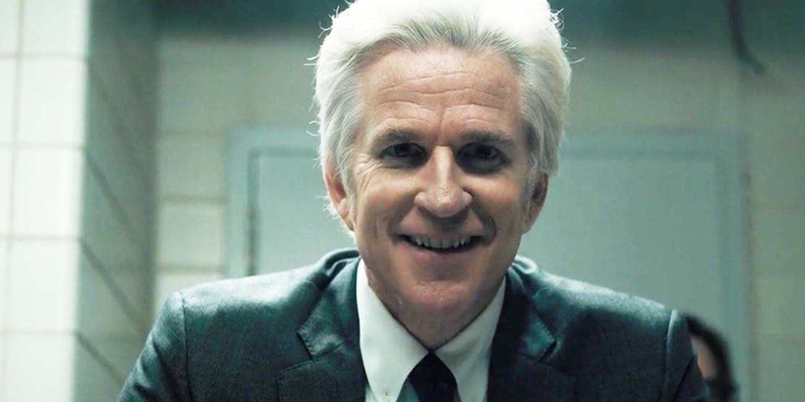

Dr. Martin Brenner is a major character and one of the main antagonists in the first season of Stranger Things. He is portrayed by Matthew Modine. Brenner was a senior research scientist and the director of Hawkins National Laboratory. He raised Eleven in the lab, testing and pushing the limits of her psychic abilities through various experiments. In one such experiment, Brenner indirectly unleashed a monster from another dimension into Hawkins, allowing Eleven to escape the lab. In the following week, Brenner and his team searched for Eleven while investigating the newly opened gateway to the other dimension. After being attacked by the Monster, his fate is currently unknown, with rumors circulating from one of his co-workers that he was still alive.
